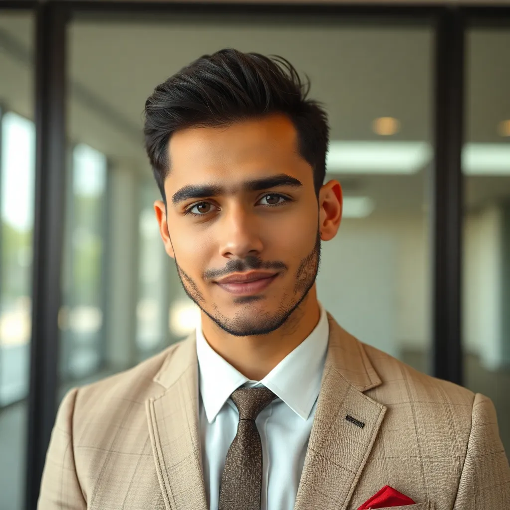

About AAPANC
The Afghan American Pashai Association of North Carolina was founded to support the Pashai community in North Carolina by promoting cultural awareness and providing valuable resources to our members.
Our Mission
At AAPANC, we strive to foster a deep sense of community, celebrate Afghan culture, and preserve the rich heritage of the Pashai people. We aim to provide a welcoming environment for all members while promoting the cultural, educational, and professional growth of our community.
Vision & Values
- Preservation: Upholding the traditions, language, and history of the Pashai people.
- Community Empowerment: Providing support and resources to help Afghan-Americans thrive in North Carolina.
- Cultural Education: Raising awareness about Afghan culture through events, workshops, and public engagements.
- Inclusivity: Embracing diversity and creating a welcoming space for all members.
Meet Our Board Members
Dr. Mohammadullah Akbari - President
Qahir Akbari - Vice President
Javed Akbari - Cultural Coordinator
Nadeem safari - Outreach Director

Ahmad Khan Gilali - Treasurer